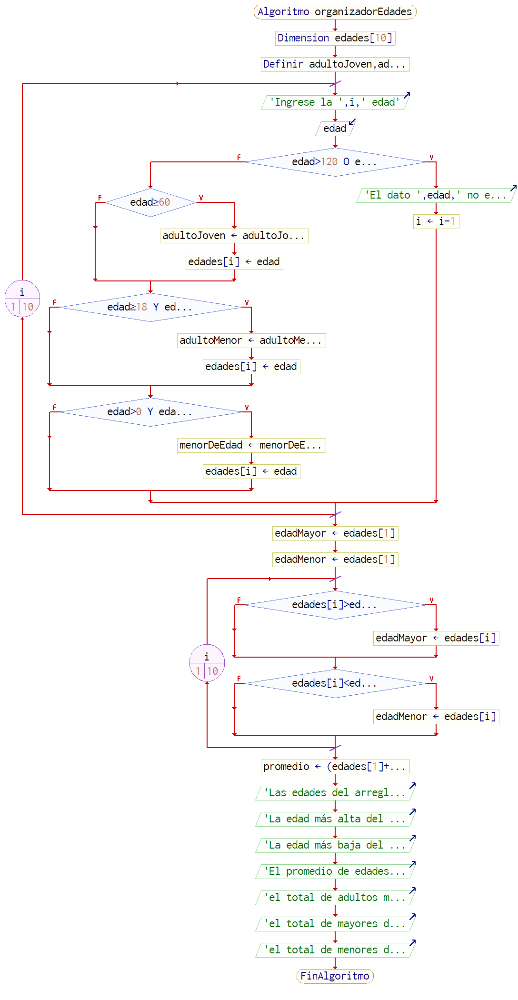

Contenido
Enunciado del algoritmo a desarrollar
Desarrollar un programa que permita almacenar las edades de un grupo de 10 personas en un vector de enteros y luego determine la cantidad de personas que son menores de edad, mayores de edad, cuántos adultos mayores, la edad más baja, la edad más alta y el promedio de edades ingresadas. Para el ejercicio anterior suponga que un adulto mayor debe tener una edad igual o superior a 60. Debe validar para cada ingreso que los valores estén en un rango entre 1 y 120 años. En caso de error deberá notificar y solicitar un nuevo valor.
Diagrama de flujo

Pseudocodigo
Algoritmo organizadorEdades
Dimension edades[10]
Definir adultoJoven,adultoMenor,menorDeEdad Como Entero
Para i<-1 Hasta 10 Hacer
Escribir 'Ingrese la ',i,' edad'
Leer edad
Si edad>120 O edad<=0 Entonces
Escribir 'El dato ',edad,' no es valido'
i <- i-1
SiNo
Si edad>=60 Entonces
adultoJoven <- adultoJoven+1
edades[i] <- edad
FinSi
Si edad>=18 Y edad<=60 Entonces
adultoMenor <- adultoMenor+1
edades[i] <- edad
FinSi
Si edad>0 Y edad<=17 Entonces
menorDeEdad <- menorDeEdad+1
edades[i] <- edad
FinSi
FinSi
FinPara
edadMayor <- edades[1]
edadMenor <- edades[1]
Para i<-1 Hasta 10 Hacer
Si edades[i]>edadMayor Entonces
edadMayor <- edades[i]
FinSi
Si edades[i]<=edadMenor Entonces
edadMenor <- edades[i]
FinSi
FinPara
promedio <- (edades[1]+edades[2]+edades[3]+edades[4]+edades[5]+
edades[6]+edades[7]+edades[8]+edades[9]+edades[10])/10
Escribir 'Las edades del arreglo son: ',edades[1],', ',edades[2],', '
,edades[3],', ',edades[4],', ',edades[5],', ',edades[6],', ',edades[7],', '
,edades[8],', ',edades[9],', ',edades[10],'.'
Escribir 'La edad m�s alta del arreglo es de ',edadMayor,' años'
Escribir 'La edad m�s baja del arreglo es de ',edadMenor,' años'
Escribir 'El promedio de edades es de ',promedio,' años'
Escribir 'el total de adultos mayores es de ',adultoJoven
Escribir 'el total de mayores de edad es de ',adultoMenor
Escribir 'el total de menores de edad es de ',menorDeEdad
Finlgoritmo
Paso a paso en video
¡Pruebalo!
codigo en JS
//Función que, al hacer click en el botón Empezar algoritmo, llama a la función algoritmo numeros
document.getElementById("submit").addEventListener("click", function(element){
algoritmoNumeros();
element.preventDefault();
});
/**
* Función que me permite agregar los numeros a un arreglo y clasificarlos
* de acuerdo a los requerimientos.
*/
function algoritmoNumeros(){
let arregloNumeros = []
let adultoMayor = 0;
let mayorDeEdad = 0;
let menorDeEdad = 0;
let numeros = document.getElementsByClassName("numero");
for (let i=0; i<numeros.length; i++){
let numero = parseInt(numeros[i].value);
if (numero >= 60){
adultoMayor += 1;
arregloNumeros.push(numero);
}
else if (numero >= 18 && numero < 60){
mayorDeEdad += 1;
arregloNumeros.push(numero);
}
else if (numero > 0 && numero <=17){
menorDeEdad += 1
arregloNumeros.push(numero)
}
}
let mayor = Math.max(...arregloNumeros);
let menor = Math.min(...arregloNumeros);
let promedio = arregloNumeros.reduce((a,b) => a + b,0)/arregloNumeros.length;
document.getElementById('algoritmo').innerHTML = `
<p>Las edades del arreglo son las siguientes: ${arregloNumeros.sort()}</p> <br>
<p>la edad más alta en el arreglo es de ${mayor} años </p><br>
<p>la edad más baja en el arreglo es de ${menor} años</p><br>
<p>el promedio de edad es de ${promedio} años</p><br>
<p>el total de adultos mayores es de ${adultoMayor}</p><br>
<p>el total de mayores de edad es de ${mayorDeEdad}</p><br>
<p>el total de menores de edad es de ${menorDeEdad}</p><br>
<button onclick="regresar()">volver a la forma</button>
`;
}
/**
* Función que elimina los resultados y vuelve a colocar el formulario
*/
function regresar(){
document.getElementById("algoritmo").innerHTML=`
<form id="formularioNumeros">`;
}